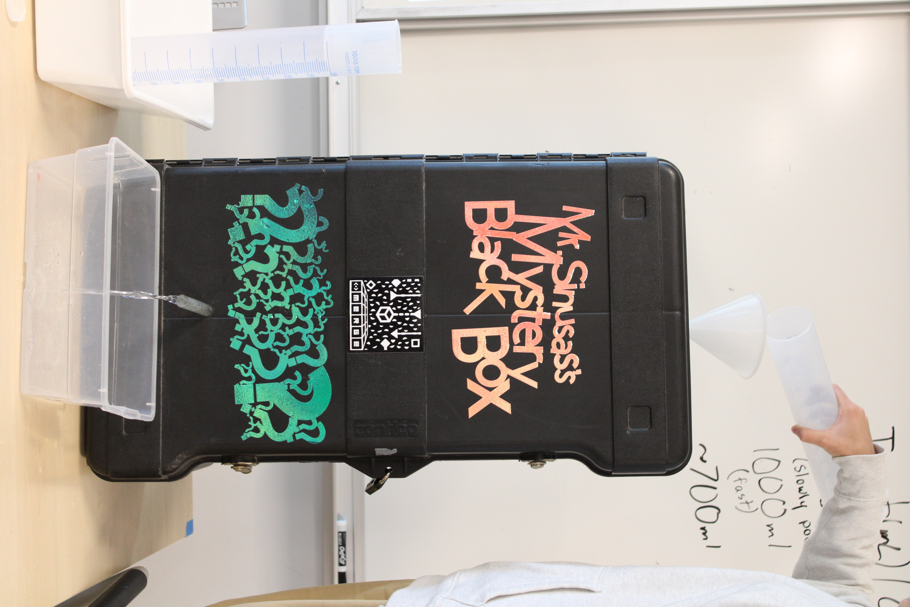

When we first started working on the black box in new media and tech Mr Sinusas showed us a demonstration of how the box worked. Water went into the box through a funnel and water came out through a tube into a bucket, that was all we knew. He then asked us the question that would lead us further into our investigation, "what's inside the mystery black box?" To figure this out in groups we had to come up with an idea and create that idea so we could collect data. There are several different ways the inside of the box could be working, we had to think of one that made the most sense.
My group and I believed that the inside of the black box was a water wheel that would pour into a bowl and go through a tube. After we brainstormed this idea/claim we decided to test the original black box and found that less water was coming out then going in. We then drew a sketch of what we thought was inside the black box (our water wheel). We decided on a water wheel because since there was less water coming out then going in some type of process was happening where this occurred. If inside the black box was a water wheel water would drop from the funnel into a section/cup of the wheel which would turn because of the weight of the water, then drop again into a separate bowl which would lead to a tube letting the water pour out of it into the outer part of the box. After we made our model we tested it and took our data down in a spreadsheet, from that spreadsheet we concluded that we poured about 100 ml of water into our funnel each trial and in some trials more water would come out then went in, and sometimes less water would come out.
| Trial | Water Input (ml) | Water Output (ml) | Water stored this trial (ml) | Running total of water stored (ml) |
|---|---|---|---|---|
| 1 | 120 | 118 | 118 | 2 |
| 2 | 100 | 86 | 14 | 16 |
| 3 | 100 | 46 | 54 | 70 |